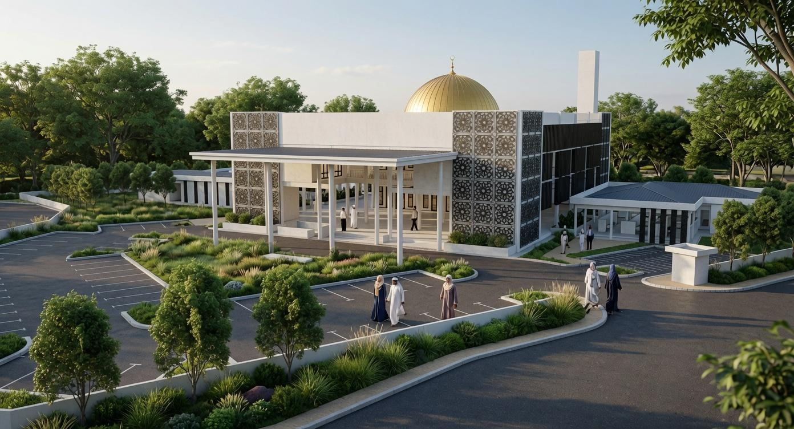
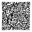

Cadangan Pembinaan
Masjid U12 Cahaya Alam
Membina Rumah Allah, Menyatukan Ummah
مَنْ بَنَى مَسْجِدًا لِلَّهِ بَنَى اللَّهُ لَهُ مِثْلَهُ فِي الْجَنَّةِ
Sebuah masjid berkonsepkan kontemporari minimalis yang dirancang sebagai pusat ibadah, dakwah, pendidikan dan kebajikan untuk komuniti Cahaya Alam serta kawasan sekitarnya.
Bersama-sama kita menjayakan pembinaan sebuah masjid yang bukan sahaja menjadi tempat menunaikan ibadah, malah berperanan sebagai pusat ilmu, kebajikan dan pengukuhan ukhuwah masyarakat.
Keperluan
Mengapa Masjid U12 Diperlukan?
Cahaya Alam di Seksyen U12, Shah Alam merupakan kawasan kediaman yang pesat membangun. Kawasan ini merangkumi Taman Cahaya Alam, Taman Desa Alam, Rumah Selangorku serta kawasan komersial dan perindustrian Bukit Raja yang berdekatan.
Keperluan sebuah masjid utama semakin penting seiring dengan pertambahan penduduk. Jumlah penduduk di kawasan ini dianggarkan melebihi 15,000 orang, majoritinya beragama Islam. Pada masa ini, Surau An-Nur Cahaya Alam dan Surau Al-Amin Desa Alam menjadi antara kemudahan ibadah sedia ada, namun kedua-duanya dilaporkan telah melebihi kapasiti, khususnya ketika solat Jumaat dan solat Tarawih.
Pembinaan Masjid U12 Cahaya Alam dicadangkan bagi memenuhi keperluan komuniti yang semakin berkembang serta menyediakan kemudahan ibadah dan aktiviti kemasyarakatan yang lebih menyeluruh.
Lokasi
Lokasi Tapak Pembinaan
Tapak masjid di Cahaya Alam, Seksyen U12, Shah Alam, dilihat dari udara. Di sebelah kanan, cadangan masjid dipaparkan di atas tapak sebenar.
Visualisasi ini hanya sebagai gambaran. Bangunan ialah rangka 3D ringkas yang diletakkan di atas tapak; kedudukan, skala, orientasi dan perspektifnya adalah anggaran dan tidak menggantikan pelan ukur atau pelan yang diluluskan pihak berkuasa.
- Koordinat tapak
- 3.083463° U, 101.482514° T(darjah perpuluhan)
- Alamat
- Cahaya Alam, Seksyen U12, 40170 Shah Alam, Selangor
Reka bentuk
Cadangan reka bentuk konsep
Semua imej dan lukisan arkitek yang dipaparkan pada laman ini merupakan visual cadangan reka bentuk, bukannya gambaran bangunan yang telah siap dibina. Pengunjung boleh memilih imej untuk melihat paparan yang lebih besar.
Konsep
Reka Bentuk Kontemporari yang Tenang dan Praktikal
Masjid U12 Cahaya Alam dicadangkan dengan pendekatan seni bina kontemporari minimalis yang mengutamakan kesederhanaan, fungsi dan keselesaan. Reka bentuknya menggunakan geometri yang ringkas dan tegas, tanpa hiasan klasik Arab atau Ottoman yang berlebihan.
Gaya seni bina
Kontemporari minimalis dengan garisan lurus dan bentuk geometri yang ringkas. Reka bentuk masjid konkrit ini dirancang untuk menampung kapasiti sehingga 4,000 jemaah.
Bahan utama
- Konkrit terdedah
- Kaca berlamina bersaiz besar bagi kemasukan cahaya semula jadi
- Kayu tropika tempatan sebagai elemen aksen
Bumbung rata
Direka dengan ruang yang berpotensi untuk bumbung hijau atau pemasangan panel solar, serta kecerunan kecil bagi membantu pengaliran air hujan.
Reka bentuk responsif iklim
- Pengudaraan silang melalui bukaan tinggi
- Elemen pelindung matahari (brise-soleil)
- Kemasan lantai daripada batu atau jubin konkrit yang sesuai untuk suasana tropika
Skema warna
Warna neutral yang menggabungkan kelabu konkrit, putih dan beige, dengan aksen hitam matte serta kayu berwarna cerah.
Kemudahan
Lebih Daripada Sebuah Tempat Ibadah
Masjid U12 Cahaya Alam dirancang sebagai pusat komuniti yang menghimpunkan ruang ibadah, pendidikan, pengurusan, perkhidmatan dan aktiviti kemasyarakatan. Kemudahan yang dicadangkan disusun mengikut aras bagi menyokong pelbagai keperluan jemaah dan penduduk setempat.
Aras 1
- Dewan solat utama dan mihrab
- Ruang limpah solat serta ruang permainan kanak-kanak
- Ruang wuduk dan tandas lelaki serta perempuan, termasuk kemudahan tandas OKU
- Bilik nikah, ruang makan dan bilik penyediaan jamuan
- Bilik pengurusan jenazah
- Ruang usahawan yang merangkumi kedai 1 hingga 4
- Ruang korban dan ruang melapah
Aras 2
- Ruang solat dan ruang limpah solat
- Dua bilik kuliah
- Pejabat am, bilik mesyuarat dan ruang kaunter
- Bilik imam, bilik nazir dan bilik VIP
- Ruang wuduk
Aras servis dan luaran
- Bilik VRF dan ruang terbuka di aras servis
- Menara (minaret)
- Pondok pengawal, rumah pam dan rumah sampah
- Taman permainan kanak-kanak dan gazebo
Kos
Anggaran kos pembinaan
Anggaran keseluruhan kos projek pembinaan Masjid U12 Cahaya Alam ialah RM30,952,400.00. Anggaran ini akan disemak dan dimuktamadkan berdasarkan laporan perunding serta kelulusan pihak berkuasa.
| Skop utama | Anggaran (RM) |
|---|---|
| Jumlah anggaran keseluruhan |
Untuk maklumat lanjut, sila rujuk perincian kos sebenar dalam dokumen PDA (Preliminary Detail Abstract) yang disertakan dalam kertas kerja cadangan pembinaan.
Sumbangan
Bersama Menjayakan Pembinaan Masjid U12
Pembinaan Masjid U12 Cahaya Alam memerlukan sokongan dan kerjasama pelbagai pihak. Dana pembinaan dirancang untuk diperoleh melalui lima sumber utama berikut:
1. Sumbangan orang ramai
Sumbangan individu melalui tunai dan saluran dalam talian.
2. Derma korporat
Sumbangan daripada syarikat, organisasi dan badan kebajikan.
3. Sumbangan kerajaan
Sokongan dan sumbangan daripada kerajaan negeri atau kerajaan Persekutuan.
4. Wakaf tunai
Wakaf tunai serta sumbangan individu bagi menyokong pembinaan masjid.
5. Kempen komuniti
Pelaksanaan program komuniti dan kempen melalui media sosial.
Salurkan Sumbangan Anda
Setiap sumbangan yang diberikan amat bermakna dalam usaha merealisasikan pembinaan Masjid U12 Cahaya Alam. Sumbangan boleh dibuat melalui DuitNow QR atau pindahan ke akaun bank yang dinyatakan di bawah.


DuitNow QR
Sumbangan melalui DuitNow QR
Imbas kod QR DuitNow menggunakan aplikasi perbankan atau e-dompet yang menyokong pembayaran DuitNow QR.
- Buka aplikasi perbankan atau e-dompet anda dan pilih fungsi “Imbas QR” atau “DuitNow QR”.
- Imbas kod QR yang dipaparkan. Jika anda membuka laman ini menggunakan telefon yang sama, muat turun imej kod QR terlebih dahulu dan muat naik imej tersebut ke dalam aplikasi.
- Semak nama penerima, masukkan jumlah sumbangan dan sahkan transaksi.
Nama penerima: Pembinaan Masjid U12 Cahaya Alam
Nota: Nama penerima mungkin dipaparkan secara terpotong dalam sesetengah aplikasi perbankan.
Sumbangan melalui pindahan bank
- Nama akaun
- Pembinaan Masjid U12 Cahaya Alam
- Bank
- Bank Islam
- Nombor akaun
- 12038010163467
Sila hubungi kami
- 017-220 8466 (Capt. Maghzan)
- 012-256 9239 (Hj. Fakhruddin)
Potongan Cukai Pendapatan (LHDN)Sumbangan wakaf layak dipertimbangkan untuk potongan cukai pendapatan apabila penyumbang menerima Resit Rasmi Potongan Wakaf daripada PWS, tertakluk kepada had 10% daripada pendapatan agregat dan syarat yang berkuat kuasa. Sila pastikan anda memohon resit serta memberikan maklumat yang lengkap semasa membuat sumbangan.
Jumlah kutipan
Maklumat jumlah kutipan akan dikemas kini dan dipaparkan di laman ini selepas dimuktamadkan oleh pihak jawatankuasa.
Jawatankuasa
Jawatankuasa Pembinaan Masjid U12
Jawatankuasa Pembinaan Masjid U12 merupakan badan penggerak awal yang menyelaras urusan permohonan, perancangan, kutipan dana dan pelaksanaan projek sehingga masjid siap dibina dan diserahkan kepada Majlis Agama Islam Selangor (MAIS).
Ahli Jawatankuasa
- Muhammad bin Abdul Aziz
- Dr. Fauzan bin Sabri
- Dr. Mohd Khalis bin Abdul Rahim
- Mohamed Nawawi bin Sulaiman
- Hj. Ahmad Humaizi bin Deraman
- Ustaz Mohd Sabirin bin Noordin
- Aiman Firdaus Tan bin Abdullah
- Muhammad Hafizuddin bin Salehuddin
- Mohd Farid bin Ali
Peranan jawatankuasa
- Menjadi penghubung antara penduduk dengan pihak berkuasa agama dan kerajaan negeri
- Menyediakan pelan cadangan serta kertas kerja projek yang lengkap
- Menyelaras urusan kelulusan tapak, pelan bangunan dan perkara teknikal
- Mengurus kutipan derma, sumbangan dan dana pembinaan
- Memantau serta menyelaras kemajuan projek sehingga siap
Rujukan surat JAI.Sel.BPM/01/018/1(25). Butiran peribadi (alamat, No. K/P dan no. telefon) telah ditutup demi privasi.
Status kelulusan JAIS: Senarai ahli jawatankuasa telah diluluskan berdasarkan surat rujukan JAI.Sel.BPM/01/018/1(25). Status kebenaran PWS: Kutipan Wakaf Khas dibenarkan sehingga 31 Disember 2027 khusus untuk pembinaan Masjid U12.
Hubungi kami
Bersama Kita Realisasikan Masjid U12 Cahaya Alam
Sokongan, doa dan sumbangan anda amat dihargai. Marilah bersama-sama mengambil bahagian dalam usaha menyediakan sebuah masjid yang dapat dimanfaatkan oleh komuniti Cahaya Alam dan generasi seterusnya.
“Satu sumbangan hari ini, insya-Allah menjadi manfaat yang berpanjangan.”